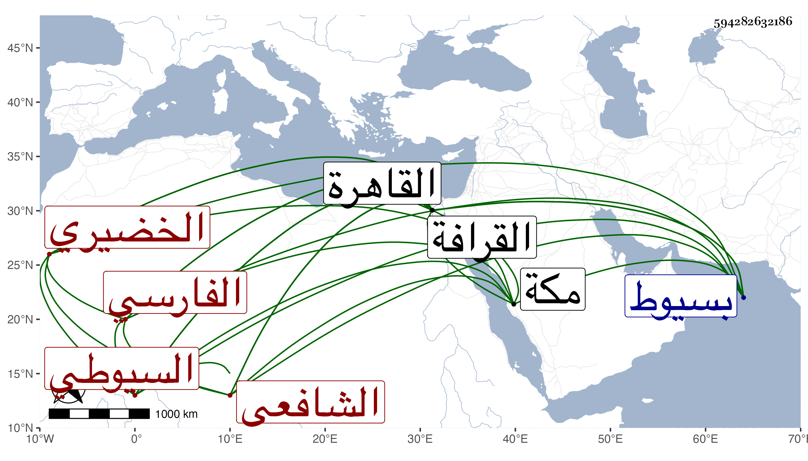

0902Sakhawi.DawLamic.ITO20230111-ara1.EIS1600.594282632186
Biography ID: 594282632186
201
أبو بكر بن محمد بن أبي بكر بن عثمان بن محمد بن خليل بن نصير بن الخضر بن الهمام الكمال أبو المناقب بن ناصر الدين بن سابق الدين الفارسي الخضيري السيوطي الشافعي والد عبد الرحمن الماضي . ولد في ذي القعدة سنة أربع وثمانمائة بسيوط ونشأ بها فحفظ القرآن والمنهاج وألفية النحو واشتغل فيها على جماعة كالسراج الحمصي حين كان قاضيها وبعض شيء في النحو على الشهاب النقوري وناب هناك في القضاء ثم قدم القاهرة فلازم القاياتي في الفقه والأصلين والنحو والمعاني والمنطق حتى أذن له وحضر دروس الونائي وأخذ في الفقه أيضا عن العز القدسي وفي المعاني والبيان عن باكير وفي العربية عن الشهاب الصنهاجي وفي الفرائض عن ابن المجدي وفي الحديث سماعا وغيره عن شيخنا وكذا سمع علي الزركشي والتفهني وبمكة على أبي الفتح المراغي حين مجاورته وأجاز له الفوي وغيره وجود الخط على محمد الكيلاني وتفنن وكتب المنسوب وأشير إليه بالفضيلة وبالبراعة في صناعة التوقيع وجلس شاهدا عند الشهاب بن تقي ولذا لما ذكره الخليفة للظاهر في قضاء مكة واستشار شيخنا فيه ولا زال يعرفه له حتى عرفه قال كان شاهدا عند ابن تقي فعدل عنه إلى السوبيني بل شيخنا هو المعين له وناب في القضاء وفي الخطابة بجامع ابن طولون ودرس بالجامع الشيخوني وغيره وأفتى وجمع حاشية على شرح الألفية لابن المصنف وصل فيها إلى أثناء الإضافة في كراريس وأخرى على العضد تنتهي إلى أثناء مبادئ اللغة وكتب رسالة في نصب ضبة من قول المنهاج (( وما ضبب بذهب أو فضة ضبة كبيرة )) وكتابا في الصرف وآخر في التوقيع وأجاب عن اعتراضات ابن المقري على الحاوي إلى غير ذلك مما لم يذكره غير ولده وبالغ في إطرائه مع اعتراضه عليه وكونه لم يعرف مولده ولا أكثر شيوخه وممن أخذ عنه حين مجاورته سنة اثنتين وأربعين البرهان ابن ظهيرة في ابتدائه وكذا ابن عمه المحب بن أبي السعادات وكان يذكر بالحمق والإعجاب بنفسه مع نظم ونثر ومحاسن وله انتماء لبيت الخليفة وربما أقرأ بعض آلهم . مات في صفر سنة خمس وخمسين بعلة ذات الجنب وصلى عليه المناوي ودفن بالقرافة قريبا من الشمس الأصبهاني رحمهما الله وإيانا .
